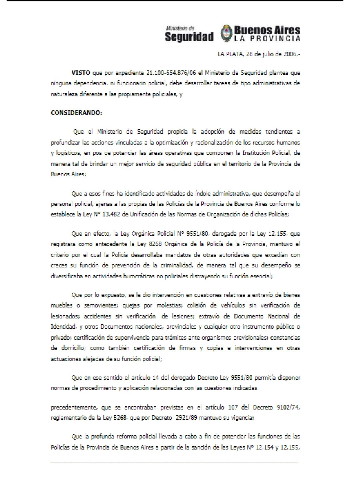
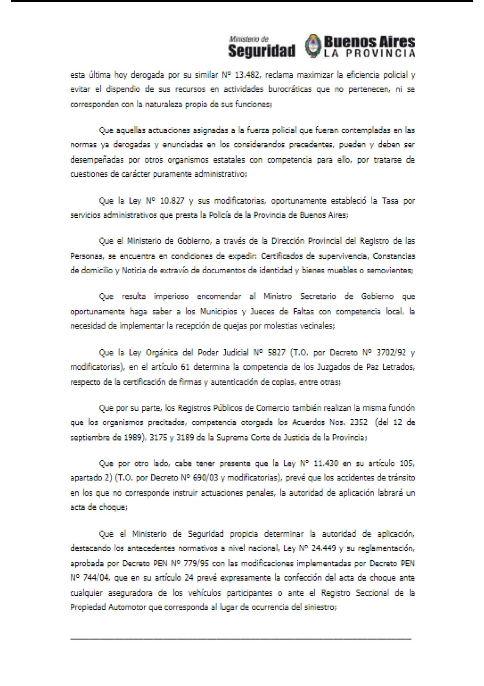
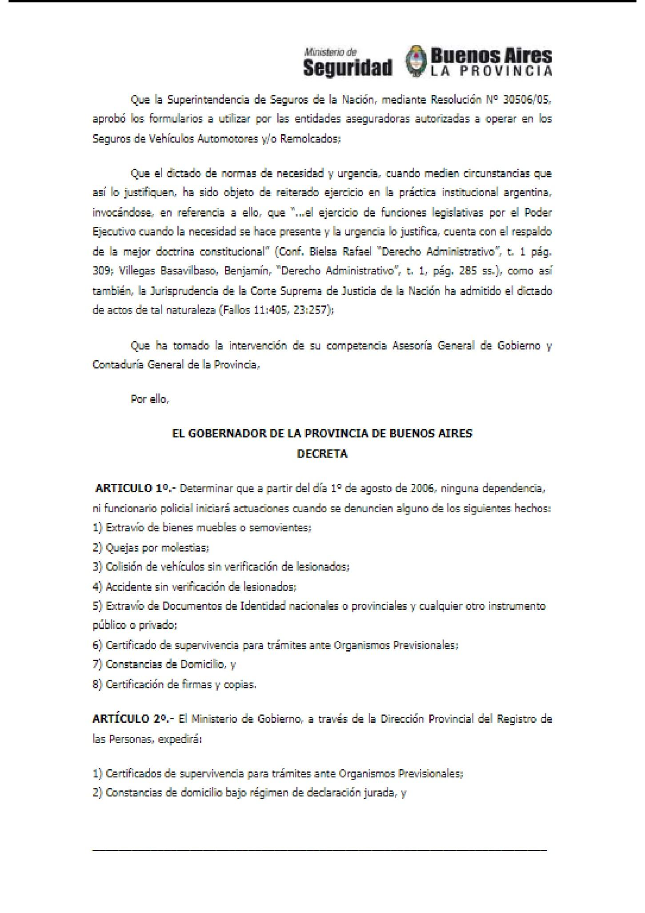
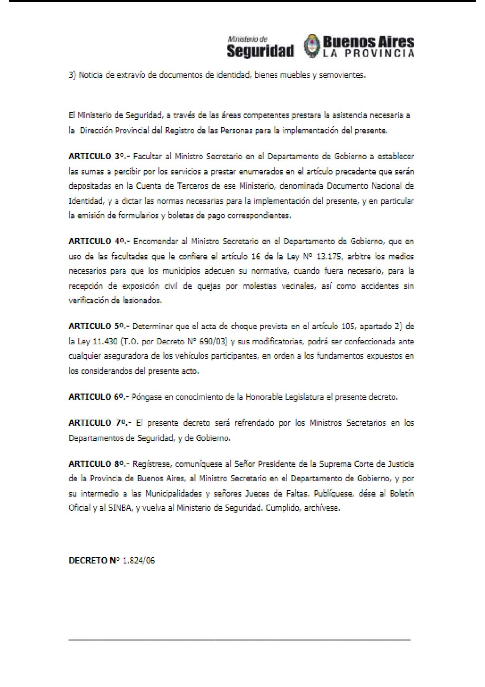
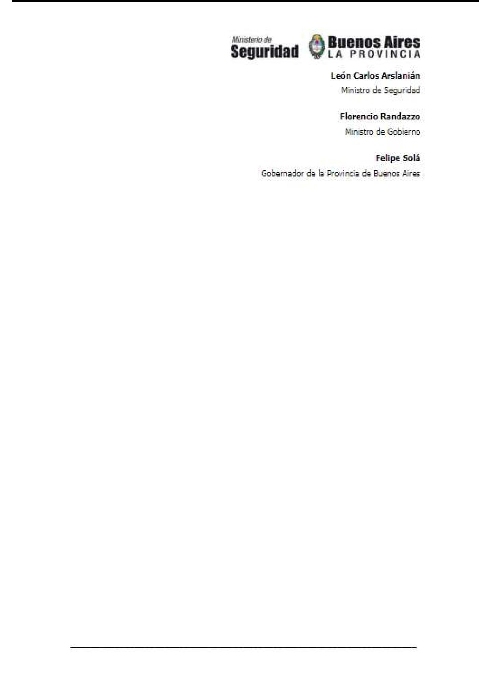

Material original · Clase 04
DESARROLLO DE TEMAS
INSTITUTO SUPERIOR DE FORMACIÓN TÉCNICA N°6.005.
CARRERA: Tecnicatura Superior en Seguridad Pública.
CURSO: Nivel II.
CICLO LECTIVO: 2025.
MATERIA: Taller Integral para la Construcción del Rol Policial Profesional.
REFERENTE: Luis Alejandro Pintos
RÉGIMEN DE CURSADA: Anual.
ITINERARIO DE CLASE: N° 4.
TIPO DE CLASE: Teórica.
Contenidos de la Clase:
Actuaciones por Denuncia de Extravió.-
Tema de la Clase:
Intervención en cuestiones relativas a extravío de bienes muebles o semovientes; quejas por molestias; colisión de vehículos sin verificación de lesionados; accidentes sin verificación de lesiones; extravío de Documento Nacional de Identidad, y otros Documentos nacionales, provinciales y cualquier otro instrumento público o privado; certificación de supervivencia para trámites ante organismos previsionales; constancias de domicilio, como también certificación de firmas y copias e intervenciones en otras actuaciones alejadas de su función policial.-
Ninguna Dependencia, ni funcionario Policial, debe desarrollar tareas de administrativas de naturaleza diferente a las propiamente Policiales.-
Finalidad de la clase:
Que los cursantes realicen una lectura del material propuesto para esta clase, con la finalidad de que logren reconocer las tareas administrativas que deben realizar en su función Policial.
Introducción de la Clase:
En esta Clase proponemos realizar una lectura comprensiva del material propuesto para esta semana donde trabajaremos: Intervención en cuestiones relativas a extravío de bienes muebles o semovientes; quejas por molestias; colisión de vehículos sin verificación de lesionados; accidentes sin verificación de lesiones; extravío de Documento Nacional de Identidad, y otros Documentos nacionales, provinciales y cualquier otro instrumento público o privado; certificación de supervivencia para trámites ante organismos previsionales; constancias de domicilio, como también certificación de firmas y copias e intervenciones en otras actuaciones alejadas de su función policial.-
En esta clase tendrán el primer Trabajo Practico, esta actividad tendrá una calificación Valorativa.- El cual se trabajara dentro del entorno.- Este Trabajo Practico tiene como finalidad unificar criterios de trabajos para futuros ejercicios.-
También sugerimos que lean el material teórico aportado en clase 3.-
Desarrollo de la Clase:
A continuación planteamos el material de estudio para esta clase el cual será únicamente de lectura. Dicho material se tendrá en cuenta en las clases siguientes.-




